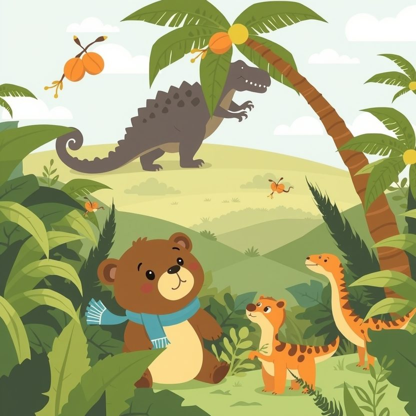

Titistoire › Les Étoiles (3-6 ans)
Nestor et le rugissement de Grondar
Une histoire de Nestor l'ourson pour parler de : le courage.

▶ Écouter et regarder l'histoire
Gratuit, sans inscription : la voix lit, le texte suit mot à mot, les images tournent comme dans un album.
Le texte de l'histoire
Dans la vallée des Fougères, il y a une règle que chacun connaît sur le bout des griffes : quand Grondar rugit, on court.
Grondar, c'est le plus grand, le plus vert, le plus terrible des tyrannosaures. Quand il rugit, les noix de coco dégringolent des palmiers. GRRRAAAOU !
Et Nestor ? Nestor a peur des orages, des araignées et de son ombre le soir. Alors Grondar… rien que son nom lui fait flageoler les genoux.
Ce jour-là, le rugissement éclate, plus fort que jamais. GRRRAAAOU ! Tric détale dans un nuage de poussière. Les oiseaux s'envolent. Même Mamie Dipla presse le pas, elle qui n'a pas couru depuis cent ans.
Nestor court aussi, les joues toutes rouges. Mais un ourson, ça ne galope pas bien vite. Surtout avec des biscuits plein les poches.
Il trébuche sur une racine, roule, boule… et se retrouve assis dans une clairière, des feuilles plein les oreilles. Tout seul. Enfin, pas tout à fait.
Devant lui se dressent deux pattes grosses comme des troncs. Au-dessus des pattes, un ventre. Au-dessus du ventre, des dents. Beaucoup de dents.
« GRRRAAAOU ! » Le souffle de Grondar lui décoiffe les oreilles et fait claquer son écharpe. Nestor ferme les yeux très fort, serre son dernier biscuit. Et il attend.
Il attend… il attend encore… Rien ne se passe. Alors il entrouvre un œil. Juste un.
Grondar ne le regarde même pas. Il tient une grosse patte en l'air, sans oser la poser. Et de son œil jaune roule une larme, large comme un seau d'eau. Splash.
« Grrraou… », gémit le tyrannosaure. De près, ça ne ressemble plus du tout à un cri de colère. Ça ressemble à un « aïe ».
Nestor s'accroupit pour mieux voir. Là, sous la patte de Grondar, il y a une épine. Une épine énorme, noire, plantée bien profond.
Grondar essaie de l'attraper. Hélas, ses bras sont bien trop courts ! Il se tortille, il se contorsionne, il bougonne… rien à faire. Personne n'a jamais dû l'aider, lui. Tout le monde court.
Nestor pourrait filer. Le chemin est juste là, entre les fougères. Ses jambes lui crient : « Cours ! » Son cœur cogne, boum-boum, boum-boum, comme un tambour.
Mais ses yeux, eux, restent accrochés à la grosse larme. Il avance d'un pas. « Hmm… fait-il d'une toute petite voix. Monsieur Grondar ? Je… je peux regarder ? »
Grondar abaisse son énorme tête, tout près. Nestor aperçoit son reflet dans chaque dent. Ses genoux tremblent si fort qu'on dirait qu'il danse.
Il empoigne l'épine à deux pattes. « Ça va piquer un peu, prévient-il. Je compte jusqu'à trois. Un… deux… »
« TROIS ! » Il tire de toutes ses forces. Ploc ! L'épine s'envole dans les airs. Nestor atterrit sur les fesses. Et Grondar…
… Grondar pousse un soupir si long que les fougères se couchent. Puis il ouvre grand la gueule, et sluuurp ! Un coup de langue rose et râpeuse. Voilà Nestor trempé des oreilles aux orteils.
« Merci, murmure une grosse voix timide. Trois jours que j'avais mal. Je criais pour qu'on vienne. Mais plus je criais, plus ils couraient. »
Nestor casse son dernier biscuit en deux. Une moitié pour lui. Une moitié pour Grondar. Pour un tyrannosaure, c'est à peine une miette. Mais il la mâchonne très longtemps, les yeux fermés, pour faire durer.
Le soir, dans la vallée, un pas lourd fait trembler le sol. Boum. Boum. Tout le monde s'apprête à courir… et s'arrête net. Sur la tête de Grondar, tout là-haut, un ourson fait coucou.
« Tu n'as pas eu peur ? » s'étonne Tric, les yeux ronds. « Oh si, avoue Nestor en montrant ses pattes. J'ai eu peur tout le temps. J'ai tremblé du début à la fin. Regarde, je tremble encore. »
Il a toujours peur des orages, des araignées et de son ombre le soir. Mais maintenant, quand Grondar rugit, Nestor ne court plus. Il glisse un biscuit dans sa poche, et il va voir ce qui ne va pas.